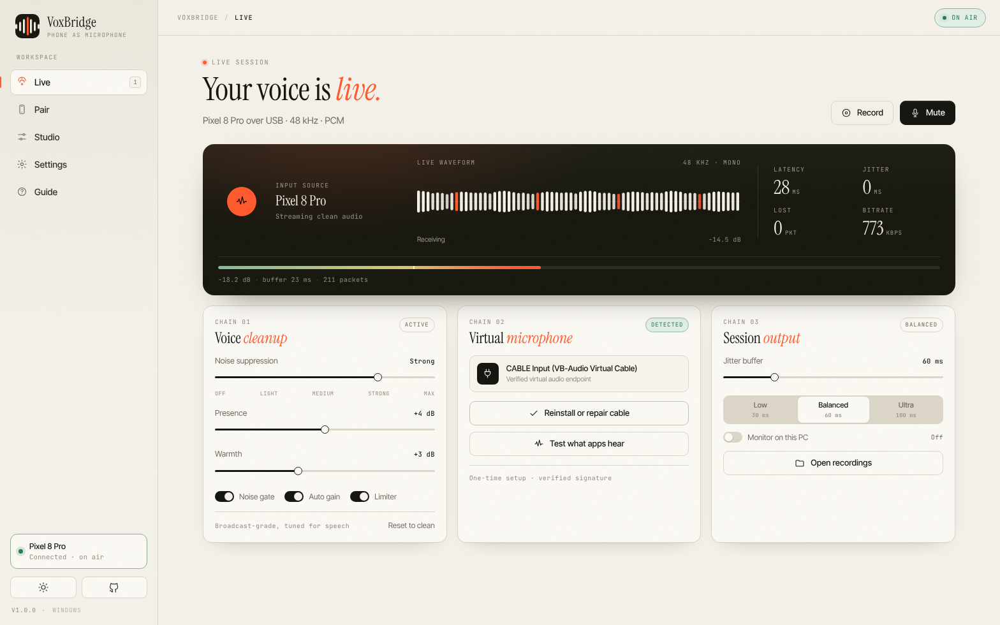
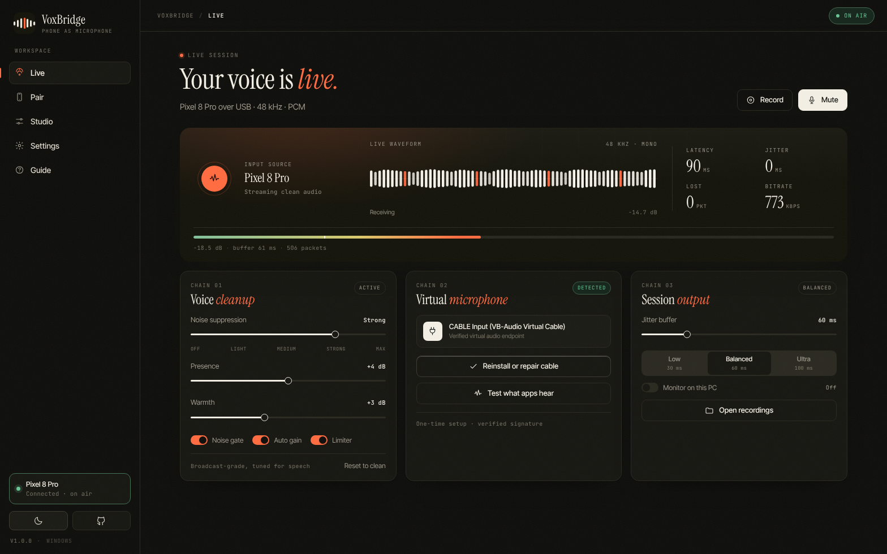
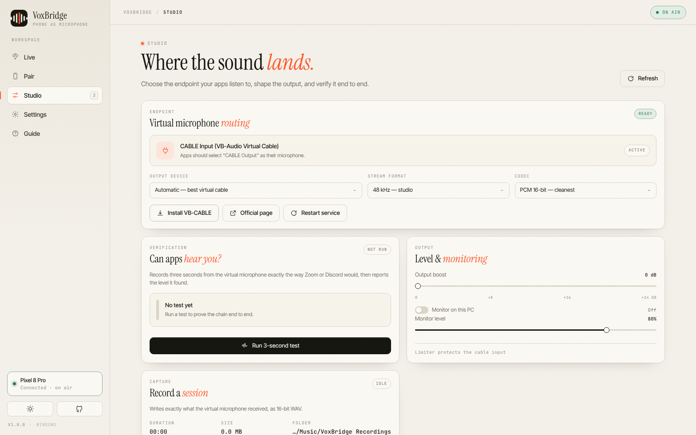

Windows
Installer
Native capture service, virtual mic routing, studio processing and session recording. Windows 10 1809+ and Windows 11, x64.
Portable build + checksums on the download page
No mic, or the one you have sounds like a walkie-talkie? VoxBridge turns the phone in your pocket into a clean, low-latency microphone that every Windows app already knows how to use.


Every download is built from this repository by GitHub Actions. The Windows build ships a real installer; the phone builds are the same protocol on both platforms, so you can switch devices mid-week.
Native capture service, virtual mic routing, studio processing and session recording. Windows 10 1809+ and Windows 11, x64.
The sender app. Foreground service, quick mute, on-device cleanup, choice of codecs and remembered hosts. Android 8 and newer.
SwiftUI app with the same protocol and DSP presets. Apple requires a signature, so install it with AltStore, Sideloadly or your own Xcode account.
Two installs, one code, and a virtual cable. The desktop app detects the cable for you and proves the chain works with a real three-second recording.
Run the Windows setup, then install the phone APK. iPhone users sideload the IPA once. Both talk the same protocol, so you can switch handsets later.
Windows 10 1809+ · Android 8+ · iOS 16+
Put both devices on the same Wi-Fi. The phone finds this PC automatically; type the four digit code, or scan the QR in the desktop app. Turn on “remember this device” and skip it next time.
UDP discovery · pairing code · optional USB
In any app choose CABLE Output — VoxBridge configures the cable and verifies the signal.
Boost, EQ and noise suppression are already applied before the audio reaches Windows.
Works in Zoom · Teams · Discord · OBS · Steam
Phone microphones are good. Phone calls are not. VoxBridge runs a proper speech chain on both ends, so the audio that reaches Windows is clean before any app touches it.
A spectral subtraction stage estimates the room once per second and subtracts it with a floor, then a gate handles the gaps. Four strengths, from off to aggressive, with a smooth transition so words do not click.
512-point STFT · adaptive noise floor · 4 levelsA soft-knee limiter and a compressor hold peaks below −1 dBFS even at maximum boost.
A 3.1 kHz peaking shelf brings voices forward; a 210 Hz low shelf puts the body back in.
The final limiter is the last thing before the virtual cable, so nothing downstream can distort.
30–240 ms of buffer that grows under loss and shrinks when the network is calm.
Copy the virtual mic output to a 16-bit WAV for evidence, editing, or a podcast backup.
We measure every stage instead of promising “zero latency”. These are real numbers from a 5 GHz Wi-Fi 6 network, 48 kHz PCM, 20 ms frames and a 60 ms adaptive buffer.
Faster than most Bluetooth headsets, with a lower floor on USB.
The phone shows the same numbers the desktop measures, so what you see is what the session is doing.

Plenty of tools install a driver and leave you guessing. VoxBridge detects the virtual audio device you already have, points itself at it, then records three seconds from the other side and reports the level it captured. If it is silent, you know before your meeting starts.
“The microphone on a phone is often better than the one in a laptop. Nobody had made the boring part — a reliable, honest bridge into Windows — feel finished. That is the whole brief.”
Any Windows app that accepts a microphone can use the virtual cable. Names are trademarks of their owners and are listed only to describe compatibility.
Same idea, different implementation. VoxBridge is native on both ends, uses a documented WebSocket protocol instead of an opaque driver, and includes a verification test. It also detects and configures the virtual cable you already trust rather than shipping a kernel driver of its own.
On Windows, yes — that is how an app becomes a microphone for other apps. VoxBridge finds one if it exists and can install the official VB-CABLE for you with a signature check. It never bundles or repackages the driver.
It needs the phone and PC on the same LAN, and UDP port 8721 open for discovery. Guest Wi-Fi with client isolation blocks discovery; type the PC address manually instead. USB mode bypasses Wi-Fi entirely through adb reverse.
Apple only allows installing iOS apps that Apple has signed. Shipping a signed IPA needs a paid developer account and a provisioning profile tied to your device. The unsigned IPA installs through AltStore, Sideloadly or Xcode with a free Apple ID.
No. Audio travels from the phone to the PC over Wi-Fi or USB and into the virtual cable. Nothing is uploaded. See the privacy policy for the short list of anonymous things the website does collect.
Yes. Any app that can select a microphone input can use the cable: Zoom, Teams, Discord, OBS, Meet, Slack, Steam, Valorant, CS2. For exclusive-mode apps, switch them to shared mode.
Nothing. The apps are MIT licensed, the protocol is documented, and the website is static. There is no account, subscription or upsell screen.
Install once. The desktop app waits in the tray, the phone connects in a few seconds, and Windows sees a microphone that sounds like you.